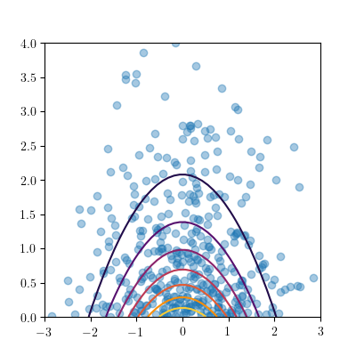
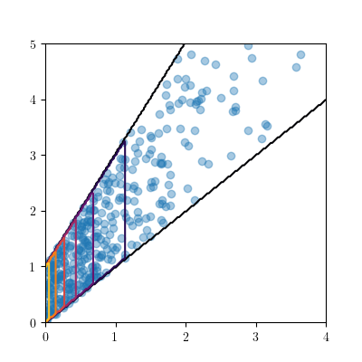
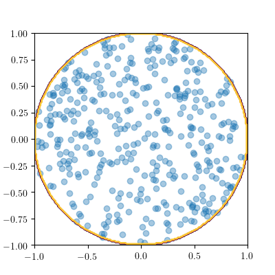
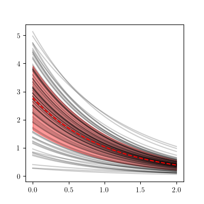

For those who didn't know that from before.
By Jonathan Feinberg
from matplotlib import pyplot import numpy import chaospy # create a distribution: distribution = chaospy.J(chaospy.Normal(), chaospy.Exponential()) # create probability density function evals and random samples: mesh = numpy.meshgrid(numpy.linspace(-3, 3), numpy.linspace(0, 4)) evals = distribution.pdf(mesh) samples = distribution.sample(400)
pyplot.contour(mesh[0], mesh[1], evals) pyplot.scatter(samples[0], samples[1], alpha=0.4)
distribution1 = chaospy.Exponential(1) distribution2 = chaospy.Uniform( lower=distribution1, upper=2*distribution1+1) distribution = chaospy.J(distribution1, distribution2) evals = distribution.pdf(mesh) samples = distribution.sample(400)
pyplot.contour(mesh[0], mesh[1], evals) pyplot.scatter(samples[0], samples[1], alpha=0.4)
General formulation for multivariate densities:
Calculate \(f_X\) and its cumulative \(F_X\):
Calculate \(f_{Y|X}\) and \(F_{Y|X}\):
class Circle1(chaospy.Dist): _bnd = lambda self, x: (-1, 1) _pdf = lambda self, x: numpy.cos(numpy.pi*x/2) / numpy.pi _cdf = lambda self, x: numpy.sin(numpy.pi*x/2)/2 + 1/2. class Circle2(chaospy.Dist): _bnd = lambda self, y, x: (-numpy.sqrt(1-x*x)), numpy.sqrt(1-x*x)) _pdf = lambda self, y, x: 0.5/numpy.sqrt(1-x*x) _cdf = lambda self, y, x: (y-numpy.sqrt(1-x*x))/numpy.sqrt(1-x*x) circle1 = Circle1() circle2 = Circle2(x=circle1) distribution = chaospy.J(circle1, circle2) evals = distribution.pdf(mesh) samples = distribution.sample(400)
pyplot.contour(mesh[0], mesh[1], evals) pyplot.scatter(samples[0], samples[1], alpha=0.4)
Toy problem (assumed to be actually complicated IRL):
t = numpy.linspace(0, 2, 200) def u(q): """My hard core function.""" return (q[0]+1)*numpy.e**(-q[1]*t+1)
Input is random assumed distributed as Circle:
distribution = chaospy.J(circle1, circle2)
What is the statistical metrics:
samples = circle.sample(100) evals = [u(sample) for sample in samples.T] mean = numpy.mean(evals, axis=0) std = numpy.std(evals, axis=0)
pyplot.fill_between(t, mean-std, mean+std, color="r", alpha=0.4) for eval_ in evals: pyplot.plot(t, eval_, "k-", alpha=0.2) pyplot.plot(t, mean, "r--")
Approximation using polynomials
samples = circle.sample(100) evals = [Y(sample) for sample in samples.T] # Polynomial basis: Q = chaospy.basis(3, dim=2) print(Q) # [1, q0, q1, q0^2, q0q1, q1^2, q0^3, q0^2q1, q0q1^2, q1^3] # Least squares method: A = Q(*samples).T C = numpy.linalg.inv(A.T @ A) @ (A.T @ evals) P = chaospy.sum(Q*C.T, -1) print(chaospy.around(P[0], 12)) # 2.7183q0+2.7183
samples = circle.sample(100) evals = P(*samples).T mean = numpy.mean(evals, axis=0) std = numpy.std(evals, axis=0) pyplot.fill_between(t, mean-std, mean+std, color="r", alpha=0.4) for eval_ in evals.T: pyplot.plot(t, eval_, "k-", alpha=0.2) pyplot.plot(t, mean, "r--")
Lots of examples can be created for Readthedocs
The polynomials are simple:
expansion = chaospy.basis(2) print(expansion) # [1, q0, q0^2] print(expansion.A) # {(0,): array([1, 0, 0]), # (1,): array([0, 1, 0]), # (2,): array([0, 0, 1])}
For certain problems, the coefficients become very sparse.
Implementing scipy.sparse allows for addressing such problems.
This presentation was made with Hovercraft.
Thanks for listening! ===================== ---- :data-rotate: 90 :data-scale: 4 :data-x: r5000 :data-y: r5000 This presentation was made with Hovercraft. .. code:: rst <-- recursion error! -->
| Space | Forward |
|---|---|
| Right, Down, Page Down | Next slide |
| Left, Up, Page Up | Previous slide |
| G | Go to slide number |
| P | Open presenter console |
| H | Toggle this help |